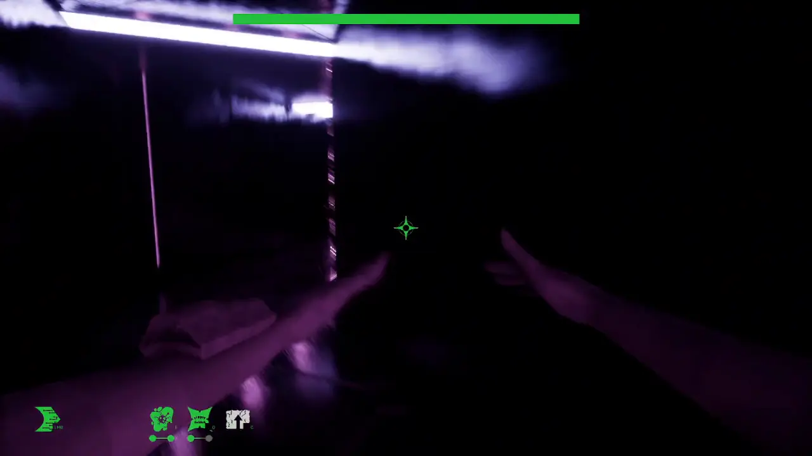
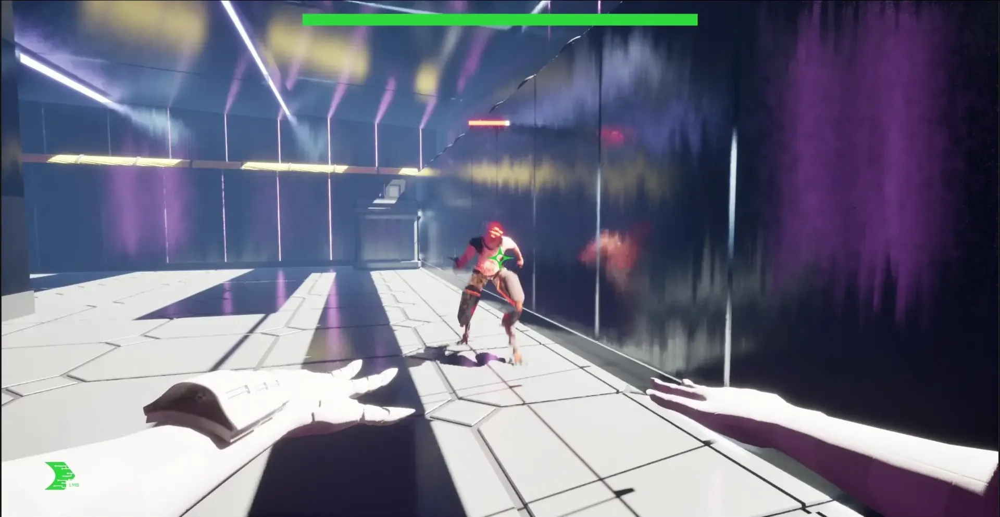
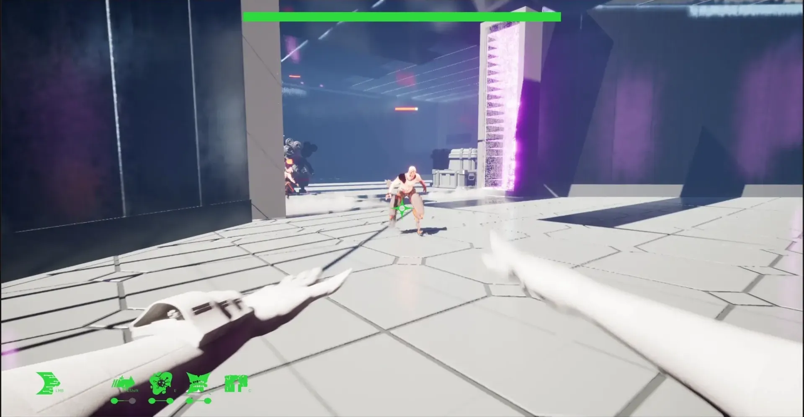
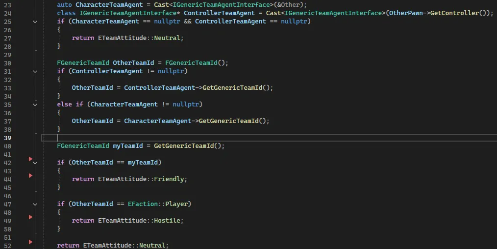
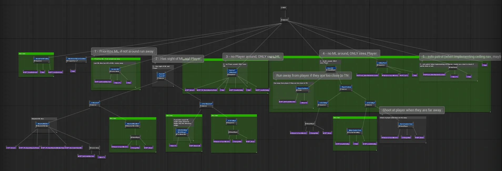
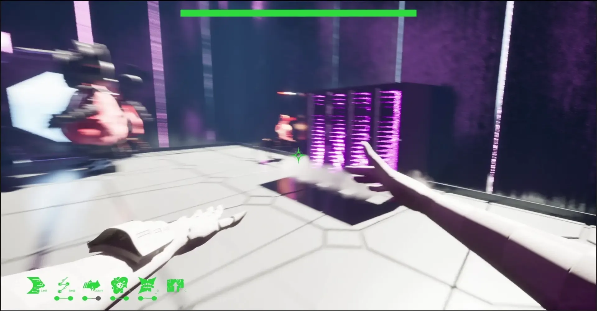

Digitize spellInterlinked
Overview
Interlinked is a 3D first person action game. The player navigates through a level, unlocking ability spells and fighting various types of AI enemies, each with their own unique behaviors. After defeating an enemy, the player may scavenge the dead for parts to further enhance their abilities.
Tools used
Unreal Engine 5, Blueprints, C++, Animation Blueprints
Platform
Desktop Browser
Duration
Less than 15 weeks
Team size
13

Life Dash spellRole: Gameplay Programmer
- Programmed Digitize spell, an ability that fires three consecutive projectiles at target location, damaging any enemies hit
- Programmed Life Dash spell, an ability that allows the player the dash through enemies, dealing damage and siphoning health
- Refactored the spells implementation to utilize Unreal Engine's Gameplay Ability System (GAS)
- Programmed AI affiliations with C++ to allow all AI enemies to detect other actors (player, other AI) and treat them properly, changing the tasks carried out in their respective behavior trees
- Implemented the solo behavior tree for C.C.G. (one of the three AI enemies)
- Implemented the group behavior tree for Torture Nexus (another AI enemy)
- Implemented procedural walk animations for Torture Nexus with Unreal Engine's control rig and locomotor
- Implemented Torture Nexus animations with animation blueprints and montages
- Implemented animations for the Lockjaw spell
- Debugged various bug fixes

AI Affiliations in C++Role: Designer
- Designed the code architecture of the player's six ability spells
- Designed C.C.G. solo behavior tree
- Designed the group behavior tree for Torture Nexus
 C.C.G. solo behavior tree
C.C.G. solo behavior tree

Torture Nexus group behavior treeI also implemented the group behavior tree for Torture Nexus. This includes tasks such as detecting Meatloaf (another AI enemy) and mounting Meatloaf (when in range), detaching from a dead Meatloaf, transitioning from the ground to the ceiling, navigating on the ceiling, and transitioning back to the ground.

Torture Nexus transitioning to ceilingHere is Torture Nexus transitioning from the ground to the ceiling, showcasing the AI's task changing in it's behavior tree in response to changes in the game environment.